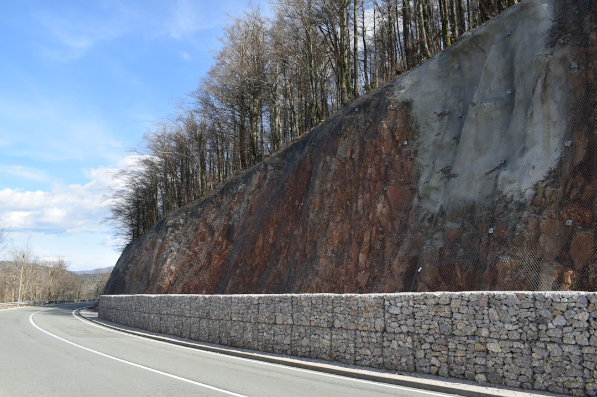

The source page is a national directory for retaining wall work, with 8 provider types, cross-checked listings, reviews, photos, service and pricing comparison prompts, and quote requests that are free to submit with no obligation to proceed. It asks for wall size, site conditions, postcode and timing so suitable professionals can assess the job. Coverage shown includes Queensland, New South Wales, Victoria, South Australia, the Australian Capital Territory and Tasmania.
For homeowners and site managers comparing retaining wall contractors, the useful starting point is a clear job brief, the wall type, site conditions and the evidence each provider can show.
Retaining Wall Contractors Explained
Retaining Wall Contractors Australia presents retaining wall work as a comparison task rather than a single trade label. The published categories include concrete sleeper, timber, block and masonry, stone and boulder, gabion, repairs, and engineered or commercial wall work. That matters because a quote for a minor repair is not the same enquiry as a new wall on a constrained site.
A practical brief should describe the wall size, site conditions, postcode and timing, because those are the inputs requested on the source page before a homeowner is connected with suitable retaining-wall professionals. Add photos, access notes and whether the job is a replacement, new build or repair. For a local angle on the same trade category, the separate Brisbane retaining wall contractor guide can help readers frame city-specific questions without turning the shortlist into a suburb list.
Who This Applies To
This guide applies to property owners, builders, landscapers and commercial site contacts who need to compare retaining wall providers before making direct contact. It is especially relevant where the first question is not price alone, but which type of provider should inspect the wall, quote the work and explain the likely construction path.
- Homeowners can use the category list to separate timber, concrete sleeper, masonry, stone, boulder and gabion options before asking for a quote.
- Repair enquiries should state whether the wall has moved, cracked, deteriorated or simply needs a section replaced, without assuming the cause before inspection.
- Commercial or engineered jobs should be identified early because the source page treats engineered and commercial retaining walls as a distinct service type.
- Regional searches can begin from the state pages shown for Queensland, New South Wales, Victoria, South Australia, Tasmania and the Australian Capital Territory.
What To Compare Before Contact
The page encourages users to search by provider type or location, then compare reviews, photos, services and pricing before getting in touch. That sequence gives a sensible screening order: confirm the contractor works on the relevant wall type, then look for visible evidence of completed work, then ask how the quote will be scoped.
Retaining wall contractors should be compared on the questions they ask as much as the claims they make. A careful enquiry will cover wall dimensions, soil and access conditions, nearby structures, drainage expectations, material preference and timing. If a provider jumps straight to a number without seeing the site context, ask what has been assumed and what could change the quote after inspection.
The directory also allows contact by call, email or quote request form. Keep the same written brief for each provider so the comparison is fair. Different answers may still be valid, but they should be responding to the same wall, site and timing information.
Choosing Between Wall Categories
The categories on the source page are useful because they stop every enquiry from being flattened into a generic wall job. Concrete sleeper, timber, block and masonry, stone and boulder, gabion, repairs, and engineered or commercial walls each imply different questions for access, appearance, durability expectations and documentation.
Do not treat the category names as final specifications. Use them to start a conversation. Ask which materials are suitable for the site, what preparation is needed, what exclusions sit outside the quoted work, and whether another professional needs to inspect the site before construction proceeds. For larger or commercial projects, ask how design information, engineering input and approvals will be handled, without assuming the answer is the same in every council area.
ASIC Moneysmart's renovation guidance is also relevant at the planning stage because retaining wall work is usually part of a broader property budget. Before accepting a quote, check whether the price includes preparation, materials, labour, removal of old materials where relevant, and follow-up rectification terms.
Evidence To Keep With The Quote
A useful quote file is more than a price. Keep the contractor's business details, the service category, photos supplied, scope notes, exclusions, timing assumptions and any written messages about how the work will be completed. The source page highlights reviews, photos, services and pricing as comparison items, so preserve those details before choosing.
Industry bodies such as the Housing Industry Association and Master Builders Australia are relevant reference points for building and trade expectations, but they do not replace job-specific advice. Use them as general sources when checking terminology, contracts or renovation planning, then ask the provider to explain how those expectations apply to the retaining wall being quoted.
Before work starts, confirm who is responsible for approvals, site access, material delivery, drainage decisions and clean-up. Those items can change the practical value of a quote even when two prices look similar. A clear written scope gives both sides fewer surprises once the project moves from comparison to construction.
- Define the job. Write down wall size, site conditions, postcode, timing and whether the work is a new build, repair or replacement.
- Choose the category. Match the enquiry to the closest listed wall type before asking for quotes.
- Compare evidence. Review photos, services, reviews and pricing notes before contacting a provider.
- Ask scope questions. Confirm inclusions, exclusions, access assumptions, approvals responsibility and clean-up before agreeing to proceed.
| Situation | Best first question | Why it changes the quote |
|---|---|---|
| New wall | Which wall type suits the site conditions and access? | Material, preparation and construction method may differ. |
| Existing wall repair | What needs inspection before a repair scope is confirmed? | The visible issue may not define the full work required. |
| Engineered or commercial job | Who manages design information and approval responsibilities? | The source page treats engineered and commercial walls as a distinct category. |
| Location search | Which providers service the state or city shown in the directory? | The page lets users browse by location before contacting providers. |
Common questions
Is submitting a retaining wall enquiry free? The source page states that submitting a request is free and that there is no obligation to proceed.
What information should I provide first? Provide wall size, site conditions, postcode and timing. Those are the project details requested before suitable professionals are identified.
Which wall types are listed? The listed categories include concrete sleeper, timber, block and masonry, stone and boulder, gabion, repairs, and engineered or commercial retaining walls.
Can I compare providers by location? Yes. The page shows browsing by location, with state and territory pages for Queensland, New South Wales, Victoria, South Australia, Tasmania and the Australian Capital Territory.
Should price be the only comparison point? No. The source page points readers toward reviews, photos, services and pricing, so the better comparison is price plus scope, evidence and fit for the wall type.
This guide covers how to compare wall categories, quote inputs and provider evidence before contacting a retaining wall professional.